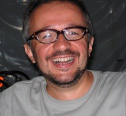

Pierluigi Martelli |
|

Pier Luigi Martelli graduated cum Laude in Physics at the University of Bologna in 1997 and received his PhD degree in Physics at the University of Bologna in 2001. In 2015 he has been appointed as Associate Professor in Biochemistry at the School of Science of the University of Bologna, where he has been Assistant Professor since 2006. He teaches at the International Master Course in Bioinformatics of the same School. His research mainly focuses on Computational Biology and, in particular, on the design and implementation of systems based on neural networks, hidden Markov models, support vector machines, and conditional random fields for the prediction of different features in proteins. He developed predictors for the secondary structure of proteins, for the topography and topology of membrane proteins (both all-alpha and beta-barrel), for the cysteine bonding state, for the subcellular localization and post-translational modifications of proteins, and for the prediction of the effects of residue variations on the stability and the functions of proteins. He was involved in projects on theoretical study and simulation of the protein folding process, on three-dimensional modelling of proteins integrating information deriving from sequence and experiments, on molecular dynamic simulation of protein stability and on interaction between proteins and ligands by means of docking techniques. He is also active in activities related to NGS data analysis and interpretation. PLM is author of more than 75 papers on international peer-reviewed journals and presented the results of his research to more than 100 national and international meetings. He was awarded for the best paper at the ISMB (Intelligent Systems for Molecular Biology) 2002 meeting.
|